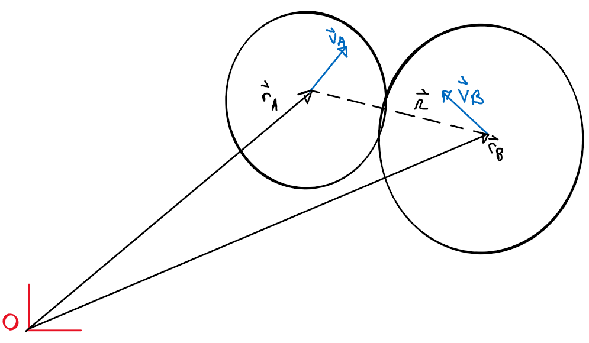
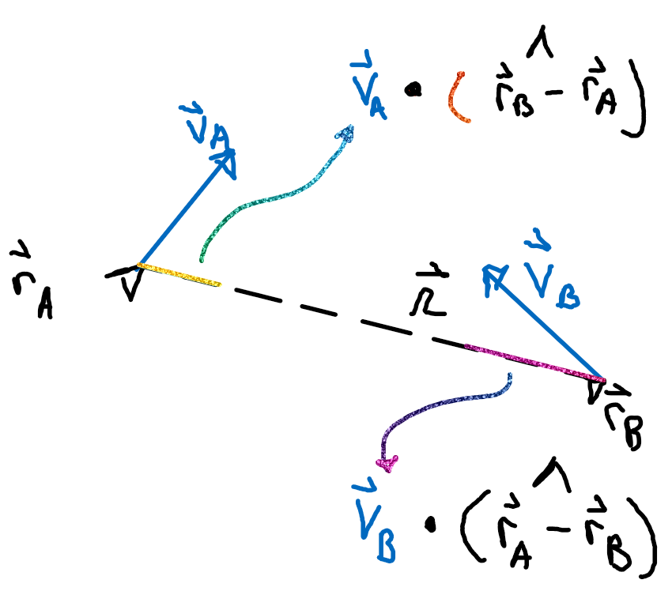

Table of Contents
While toying around with a small 2D physics project, I was unable to follow a popular online explanation of impulse based collision resolution
Overview
The change in motion of objects in a collision is caused by the forces generated at the collision point by compression and deformation. This compression and deformation is too fast to simulate frame by frame for a rigid body. Infinitesimal collision time allows us to assume an impulse model – instantaneous change in velocity due to the collision. Thus, the movement after the collision can be calculated from the movement before the collision with the consideration of some math and physical parameters.
Impulse Derivation
Definition of momentum:
\[ \vec p = m \vec v\]
Newton's second law: \[\vec F = m\vec a = \frac{d}{dt} \left( m \vec v \right) = \frac{d \vec p}{dt}\]
Seperating variables and integrating:
\[\int_{t_1}^{t_2} \vec F \,dt = \int_{p_1}^{p_2} \vec dp \, = \vec p_2 - \vec p_1\]
This change in momentum is said to be impulse, let \(\vec J\) be impulse:
Substituting original momentum expression: \[\vec p_2 - \vec p_1 = m \vec v_2 - m \vec v_2\]
\[\frac{\vec p_2 - \vec p_1}{m} = \vec v_2 - \vec v_1\]
\[\vec v_2 = \vec v_1+ \frac{\vec p_2 - \vec p_1}{m}\]
\[\vec v_2 = \vec v_1+ \frac{\vec J}{m}\]
I tend to use prime notation for after a collision, so let's change that to stay consistent:
\[{\vec v}^\prime = \vec v+ \frac{\vec J}{m}\]
Problem Setup
Consider two colliding objects, the shape is arbitrary, what's important is that a collision has somehow been detected and that a collision normal can be established.

From properties of dot products and normalized vectors, the magnitude of the velocities of the respective bodies along the relative position vector is:
\[\vec V_A \cdot \hat {\left( \vec r_B - \vec r_A \right)}\] \[\vec V_B \cdot \hat {\left( \vec r_A - \vec r_B \right)}\]

Figure 2: The magnitudes of the respective velocities along relative position
Remembering that the sign of a dot product evinces the comparative direction of two vectors; it's clear that if the sum of these two dot products is negative, the objects, although colliding during this frame, are moving away from each other, similarly, if the sum is positive then they're moving towards each other and the collision has to be resolved.
\[\vec V_A \cdot \hat {\left( \vec r_B - \vec r_A \right)} + \vec V_B \cdot \hat {\left( \vec r_A - \vec r_B \right)} < 0\] \(\implies\) moving away from each other \[\vec V_A \cdot \hat {\left( \vec r_B - \vec r_A \right)} + \vec V_B \cdot \hat {\left( \vec r_A - \vec r_B \right)} > 0\] \(\implies\) moving toward each other
This value is called the closing velocity, \(v_c\) in the literature.
This is sloppy naming as it's a scalar value, but I'll stick with it for consistency.
Rewritten:
\[v_c = -\left( \vec v_A - \vec v_B \right) \cdot \hat {\left( \vec r_A - \vec v_B \right)}\]
It's negation is often used instead, called the seperating velocity \(v_s\) and its implications change accordingly.
\[v_s = \left( \vec v_A - \vec v_B \right) \cdot \hat {\left( \vec r_A - \vec v_B \right)}\]
\(v_s > 0 \implies\) moving away from each other.
\(v_s < 0 \implies\) moving toward each other.
Deriving an expression for the velocity after the collision
Recall from the above derivation of impulse that a velocity after collision is of the following form: \[{\vec v}^\prime = \vec v+ \frac{\vec J}{m}\]
This is unfortunately underconstrained/ underdetermined and another equation is needed to solve for the impulse, fortunately there are more relationships to mine.
From physics, we know the coefficient of restitution (denoted by \(e\)) is the ratio of the final to initial relative velocity between two objects after they collide. It ranges from \(0\) to \(1\) where \(1\) would be a perfectly elastic collision and \(0\) a perfectly inelastic collision ([Wiki article for coefficient of restitution](https://en.wikipedia.org/wiki/Coefficient_of_restitution))
\[e = \frac {{v_s}^\prime}{v_s}\]
By Newton's third law and the restitution relationship:
\[{v_s}^\prime = -e v_s\]
To ease the notation, I would also like to make a substitution for the normalized relative position vector \(\hat {\left( \vec r_A - \vec v_B \right)}\) as this is the same thing as the "contact normal", \(\hat n_c\)
\[\implies v_s = \left( \vec v_A - \vec v_B \right) \cdot \hat n_c\]
Substituting this into our restitution expresion \[{v_s}^\prime = -e v_s = -e \left( \vec v_A - \vec v_B \right) \cdot \hat n_c\]
\({v_s}^\prime\) is the seperating velocity (magnitude) after the collision whose constituents must agree with our impulse expression. Note that due to Newton's third law, impulses for each object will have opposite directions.
\[ {v_s}^\prime = \left( {\vec v_A}^\prime - {\vec v_B}^\prime \right) \cdot \hat n_c\] \[{\vec v_A}^\prime = \vec v_A + \frac{\vec J}{m_A}\] \[{\vec v_B}^\prime = \vec v_B - \frac{\vec J}{m_B}\]
\[\implies {v_s}^\prime = \left( \vec v_A+ \frac{\vec J}{m_A} - \vec v_B + \frac{\vec J}{m_B} \right) \cdot \hat n_c\]
Which can be substituted into our restitution expresion \[\left( \vec v_A+ \frac{\vec J}{m_A} - \vec v_B + \frac{\vec J}{m_B} \right) \cdot \hat n_c = -e \left( \vec v_A - \vec v_B \right) \cdot \hat n_c\]
Using the same algebraic properties of the dot product:
\[\left( \vec v_A - \vec v_B + \vec J \left( \frac{1}{m_A} + \frac{1}{m_B}\right) \right) \cdot \hat n_c = -e \left( \vec v_A - \vec v_B \right) \cdot \hat n_c\]
\[\left( \vec v_A - \vec v_B \right)\cdot \hat n_c + \vec J \left( \frac{1}{m_A} + \frac{1}{m_B} \right) \cdot \hat n_c = -e \left( \vec v_A - \vec v_B \right) \cdot \hat n_c\]
$$\vec J \left( \frac{1}{m_A} + \frac{1}{m_B} \right) ⋅ \hat nc =
-\left(1 + e\right) \left( \vec vA - \vec vB \right) ⋅ \hat nc $$
\[\vec J \cdot \hat n_c = \frac{-\left(1 + e\right) \left( \vec v_A - \vec v_B \right) \cdot \hat n_c}{\left( \frac{1}{m_A} + \frac{1}{m_B} \right)} \]
This is, by definition of projection with a normalized vector, the part of the impulse in the direction of the contact normal, which is what we wanted.
<!– I think this is a reiteration of Poisson's hypothesis and could be more succinctly given. –>
Code Example
/**
* A, B are rigidBody objects
* mtv is a minimum translation vector calculated in the collision detection routine
*/
void resolveCollision(rigidbody& A, rigidbody& B, vec3 mtv){
// Get relative velocity and contact normal
vec3 relativeVelocity = A.vel - B.vel;
vec3 contactNormal = A.pos - B.pos;
contactNormal.normalize();
float seperatingVelocityMagnitude = relativeVelocity.dot( contactNormal );
// Do not resolve if velocities are separating
if(seperatingVelocityMagnitude > 0)
return;
// Take least elastic restitutionCoeff coefficient
float e = std::min( A.restitutionCoeff, B.restitutionCoeff );
// Calculate part of the impulse in the direction of the contact normal
float impulseMagnitudeInContactNormal = -(1 + e) * seperatingVelocityMagnitude / (A.inv_mass - B.inv_mass);
// scale the normalized minimum translation to impulse length
vec3 impulse = -(mtv.normalize) * impulseMagnitudeInContactNormal;
// Apply impulse to bodies' velocities
A.vel += impulse / A.mass
B.vel -= impulse / B.mass
}